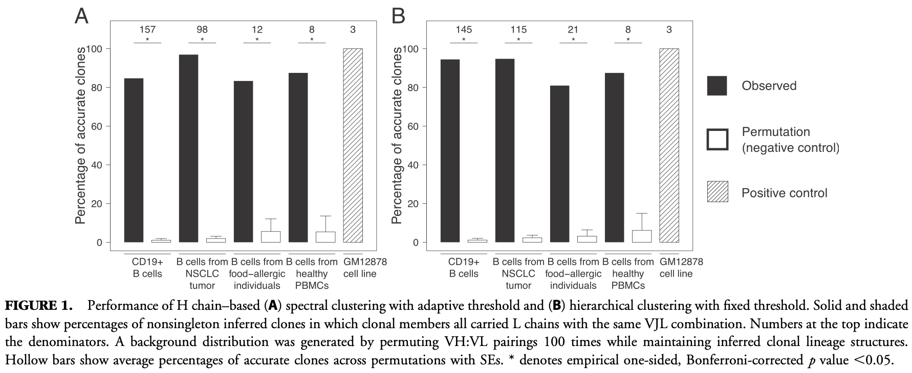
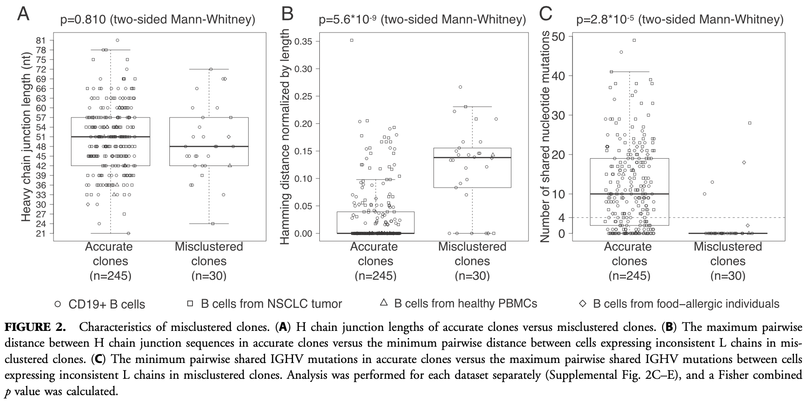
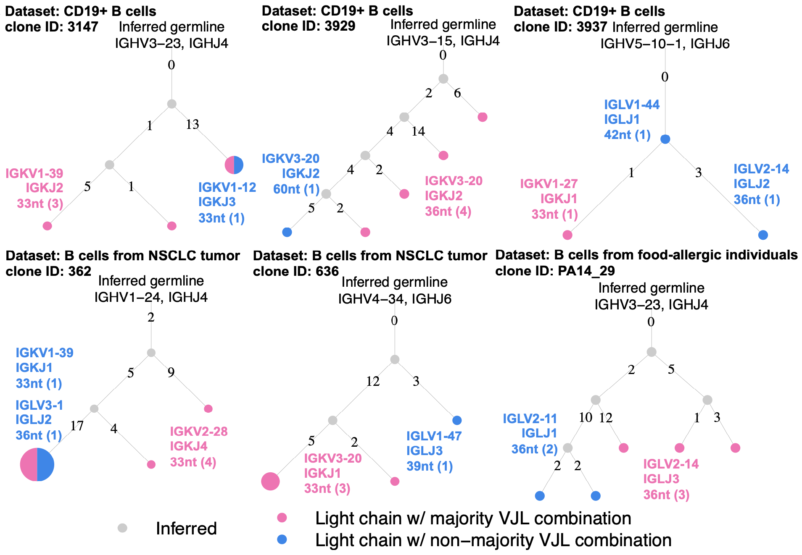

In this study, we assessed the antibody light chain consistency of B cell clones computationally inferred based on antibody heavy chains.

We then compared the characteristics of the accurate clones and misclustered B cell clones.

Here's what the lineage structures of some misclustered B cell clones look like.

We also investigated and confirmed that there is much less junctional diversity in the light chains than in the heavy chains.